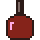
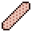
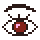
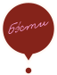

Дизайн-система бэсти
Всё на сайте собрано из этих элементов. Значения — переменные в начале css/style.css: поменяли там — поменялось везде. На самом сайте клавиша G показывает сетку поверх страницы.
(01) Цвета
(02) Шрифты и размеры
Один шрифт на весь сайт — PT Mono, заголовки заглавными. Рукописный Gogol — только для пометок и подписей (кириллица, без латиницы и ₽).
--t-h1 · 72Маникюр--t-h2 · 44 (32 тел.)Заголовок блока--t-num · 402 890 ₽--t-h3 · 24Имя, название услуги--t-l · 16Крупный текст: вводные, контакты--t-m · 13,5Основной текст. Межстрочный 1,65, в строке не больше 70–80 знаков.--t-s · 12Кнопки и ссылки-действия--t-xs · 11(01) метка блока, подпись--t-hand · 40 / 56 / 72в гостях у бэсти(03) Сетка и силовые линии
12 колонок, зазор 8 px, поля 16 px. Заголовки блоков и левые края контента — колонка 2. Подписи, тексты и описания справа — колонка 8. Правый край контента — колонка 11. Фото на всю ширину (обложка, карта) — от края до края.
кол. 2 — заголовки
кол. 8 — тексты
(04) Кнопки
Высота 44 px (на обложке 56), шрифт 12, заглавные, жёсткая тень 3 px. Бордовая — главное действие, белая — второе, розовая — в шапке. Без стрелок и скруглений.
(05) Окна, рамки, тени
(06) Иконки
Два стиля. Пиксельные — в папках услуг. Рисованные от руки (неровный контур, розовая заливка, бордовая обводка) — у заголовков и пометок. Чужие (облачко MECCA) не используем.



